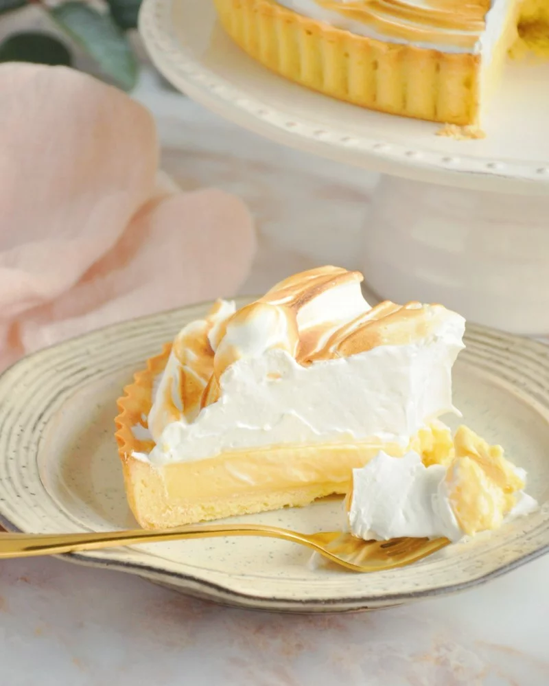

Lemon pie

Description
Receta de lemon pie de paulina cocina, con merengue francés como se debe
hacer el lemon pie lcdsm (Imagen solo de modo ilustrativo).
Ingredients
- 200g. de galletitas de vainilla
- 70g. de manteca
- 4 huevos
- 1 lata de leche condensada
- 1/2 vaso de jugo de limón
- Ralladura de medio limón
- 200g. de azúcar
Steps
- Moler 200 gr de galletitas de vainilla y colocar en un recipiente.
- Agregar 80-100 gr de manteca derretida. Utilizamos las manos para mezclar hasta que quede con consistencia de arena mojada.
- Desparramar la preparación obtenida en una tartera. Aplastarlo bien con las manos.
- Por otro lado la crema de limón: separamos yemas y claras de 4 huevos. Colocamos las yemas en un recipiente, agregamos una lata (400gr) de leche condensada y mezclar. Esta receta de lemon pie lleva medio vaso de jugo de limón que se lo agregamos en este momento, junto con rayadura de cáscara. Batimos hasta lograr una consistencia espesa.
- Agregamos la crema de limón encima de la masa que preparamos al principio en la tartera.
- Y ahora el merengue francés: empezamos batiendo las 4 claras con batidora hasta que levanten (como si fuera espuma). Agregamos 200 gr de azucar en forma de lluvia sin dejar de batir, seguimos batiendo hasta lograr la consistencia deseada (bien espeso).
- Agregamos el merengue encima de la crema de limón en la tartera. Con una cuchara distribuimos y damos al merengue la forma que deseamos.
- Poner al horno (en la bandeja más alta posible o en la parrilla del horno) bien caliente. Estén atentos que es apenas un ratito para que se dore el merengue!
- La receta de lemon pie está lista!